Code for the beta-cell insulin secretion model incorporating the incretin effect
Contents
- Parameters initialization
- - Study A1: GIP or GLP1 infusion at basal glucose - NGT subjects
- - Study A2: saline, GIP or GLP1 infusion at basal glucose - T2D subjects
- - Study B1: hiperglycemic clamp (HGC) with saline, GIP infusion or GLP1 infusion at different doses - NGT subjects
- - Study B1: hiperglycemic clamp (HGC) with saline, GIP infusion or GLP1 infusion at different doses - T2D subjects
- - Study B2: hyperglicaemic clamp (HGC) with saline, GIP or GLP1 infusion - NGT subjects
- - Study B2: hyperglicaemic clamp (HGC) with saline, GIP or GLP1 infusion - T2D subjects (pre glucose normalization)
- - Study B2: plot cpeptide
- - Study B3: hiperglycemic clamp (HGC) with saline or GIP infusion - NGT subjects
- - Study B3: hiperglycemic clamp (HGC) with saline, GIP infusion at different doses or GLP1 infusion - T2D subjects
- - Study B4: hyperglicaemic clamp (HGC) with boluses and infusion of GIP at different doses - NGT subjects
- - Study B4: hyperglicaemic clamp (HGC) with boluses and infusion of GIP at different doses - T2D subjects
- - Study C1: glucose ramp with saline infusion or GLP1 infusion at different doses - NGT subjects
- - Study C1: glucose ramp with saline infusion or GLP1 infusion at different doses - T2D subjects
- - Study D1: OGTT and Intravenous glucose infusion simulating an OGTT with saline, GIP or GLP1 infusion - NGT subjects
- Data analysis
addpath(genpath('model_functions'))
Parameters initialization
The parameters are the result of the fit to the experimental data (see below for the list of publications).
Each dataset (related to a specific experimental condition) and the corresponding reference parameter vector are saved in a different file .mat.
Each element of the p vector correspond to a parameter in the equations of the article: p(1)--> p6 in the equation of the article p(2)--> p7 in the equation of the article p(3)--> p8 in the equation of the article p(4)--> p9 in the equation of the article p(5)--> p10 in the equation of the article p(6)--> p11 in the equation of the article p(7)--> Parameter not used p(8)--> p5 in the equation of the article p(9)--> p1 in the equation of the article p(10)--> p2 in the equation of the article p(11)--> p3 in the equation of the article p(12)--> p4 in the equation of the article p(13)--> p15 in the equation of the article p(14)--> p14 in the equation of the article p(15)--> p12 in the equation of the article p(16)--> p13 in the equation of the article p(17)--> p21 in the equation of the article p(18)--> p22 in the equation of the article p(19)--> p23 in the equation of the article p(20)--> p24 in the equation of the article p(21)--> p16 in the equation of the article p(22)--> p17 in the equation of the article p(23)--> p18 in the equation of the article
% The vector p_peak is held fixed % p_peak(1)--> p19 in the equation of the article % p_peak(2)--> p20 in the equation of the article
- Study A1: GIP or GLP1 infusion at basal glucose - NGT subjects
Data from Honka et al., 2018
clear all close all clc % load data load Honka/Honka % Calculate calcium from glucose pca=[p_peak;p(17:23)]; % calcium parameter camod=struct('t',{},'v',{}); for k=1:2 camod(k)=casim(glu(k),pca); end % Add to calcium the transient increse due to the GIP or GLP-1 % GIP infusion (2 pmol/kg/min), GLP-1 infusion (0.75 pmol/kg/min) camod_IE=struct('t',{},'v',{}); for k=1:2 camod_IE(k).t=camod(k).t; camod_IE(k).v=camod(k).v+ca_transient(k).v; % calcium with incretins end % Simulate secretion with the contribution of the incretin effect secmod_IE=struct('t',{},'v',{}); for k=1:2 secmod_IE(k)=secsim_IE(p,camod_IE(k),glu(k),Kincr(k)); end % Plot glucose, calcium, Kincr, secretion subplot(4,1,1) plot(glu(1).t,glu(1).v,'--b',glu(2).t,glu(2).v,'--r') setAxes(-10, 80, 10, '', 3, 6, 3, 'G (mmol/L)') % generate the figure with the proper layout subplot(4,1,2) plot(camod_IE(1).t,camod_IE(1).v,'b',camod_IE(2).t,camod_IE(2).v,'r') setAxes(-10, 80, 10, '', 50, 150, 3, 'C (nmol/L)') % generate the figure with the proper layout subplot(4,1,3) plot(Kincr(1).t,Kincr(1).v,'b',Kincr(2).t,Kincr(2).v,'r') setAxes(-10, 80, 10, '', 1, 5, 5, 'Kincr') % generate the figure with the proper layout subplot(4,1,4) plot(sec(1).t,sec(1).v,'--b',secmod_IE(1).t,secmod_IE(1).v/BSA,'b',... sec(2).t,sec(2).v,'--r',secmod_IE(2).t,secmod_IE(2).v/BSA,'r') % model secretion needs to be normalized to body surface setAxes(-10, 80, 10, 'Time (min)', ... 0, 300, 3, 'S (pmol min^{-1}m^{-2})') % generate the figure with the proper layout legend('GIP data','GIP model','GLP-1 data','GLP-1 model')
Warning: When delay time is set to zero, the transport delay block 'betavars/tau_k' is automatically set to support direct feedthrough. This may cause an algebraic loop. A Memory Block can be used in place of the Transport Delay to break the loop Warning: When delay time is set to zero, the transport delay block 'betavars/tau_k' is automatically set to support direct feedthrough. This may cause an algebraic loop. A Memory Block can be used in place of the Transport Delay to break the loop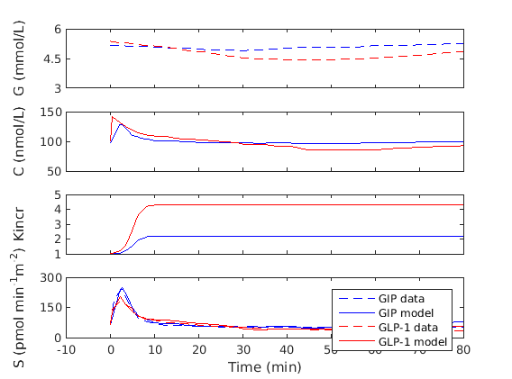
- Study A2: saline, GIP or GLP1 infusion at basal glucose - T2D subjects
Data from Mentis et al., 2010
clear all close all clc % load data load Mentis/Mentis % Calculate calcium from glucose pca=[p_peak;p(17:23)]; % calcium parameter camod=casim(glu(1),pca); % calcium without incretins % Simulate calcium - GIP infusion low dose (4 pmol/kg/min), GIP infusion % high dose (16 pmol/kg/min), GLP1 infusion (1 pmol/kg/min) camod_IE=struct('t',{},'v',{}); catmp=struct('t',{},'v',{}); for k=1:2 catmp(k)=casim(glu(k+1),pca); camod_IE(k).t=catmp(k).t; camod_IE(k).v=catmp(k).v+ca_transient.v; % calcium with incretins end % Simulate secretion - saline infusion secmod=secsim_IE(p,camod,glu(1),Kglu);% Kglu is the potentiating ... % effect of glucose during HGC, independent from the incretin effect but that affects the .. % refilling as the incretin effect % Simulate secretion with the contribution of the incretin effect % GIP infusion low dose (4 pmol/kg/min), GIP infusion % high dose (16 pmol/kg/min), GLP1 infusion (1 pmol/kg/min) Kincr_glu=struct('t',{},'v',{}); for k=1:2 Kincr_glu(k).t=Kincr(k).t; Kincr_glu(k).v=Kincr(k).v.*Kglu.v; end % Kglu is the potentiating ... % effect of glucose during HGC, independent from the incretin effect but that affects the .. % refilling as the incretin effect secmod_IE=struct('t',{},'v',{}); for k=1:2 secmod_IE(k)=secsim_IE(p,camod_IE(k),glu(k+1),Kincr_glu(k)); end % Calculate cpeptide [pcp,~,~]=vancau('T2D','M',age,weight,height); % cpeptide - saline infusion cpepmod=cpepsim(pcp,glu(1).t,secmod); % cpeptide - GIP infusion low dose (4 pmol/kg/min), GIP infusion % high dose (16 pmol/kg/min), GLP1 infusion (1 pmol/kg/min) cpepmod_IE=struct('t',{},'v',{}); for k=1:2 cpepmod_IE(k)=cpepsim(pcp,glu(k).t,secmod_IE(k)); end % Plot glucose, calcium, Kincr, secretion subplot(4,1,1) plot(glu(1).t,glu(1).v,'--k',glu(2).t,glu(2).v,'--b',glu(3).t,glu(3).v,'--r') setAxes(0, 240, 50, '', 5, 20, 4, 'G (mmol/L)') % generate the figure with the proper layout subplot(4,1,2) plot(camod.t,camod.v,'k',camod_IE(1).t,camod_IE(1).v,'b',camod_IE(2).t,camod_IE(2).v,'r') setAxes(0, 240, 10, '', 50, 450, 5, 'C (nmol/L)') % generate the figure with the proper layout subplot(4,1,3) plot(glu(1).t,ones(1,numel(glu(1).t)),'k',Kincr(1).t,Kincr(1).v,'b',... Kincr(2).t,Kincr(2).v,'r') setAxes(0, 240,10, '', 1, 8, 8, 'Kincr') % generate the figure with the proper layout subplot(4,1,4) plot(secmod.t,secmod.v/BSA,'k',secmod_IE(1).t,secmod_IE(1).v/BSA,'b',... secmod_IE(2).t,secmod_IE(2).v/BSA,'r') % model secretion needs to be normalized to body surface setAxes(0, 360, 7, 'Time (min)', ... 0, 600, 5, 'S (pmol Kg min^{-1})') % generate the figure with the proper layout legend('saline model','GIP model','GLP1 model') figure() plot(cpep(1).t,cpep(1).v,'--k',cpepmod.t,cpepmod.v,'k',... cpep(2).t,cpep(2).v,'--b',cpepmod_IE(1).t,cpepmod_IE(1).v,'b',... cpep(3).t,cpep(3).v,'--r',cpepmod_IE(2).t,cpepmod_IE(2).v,'r'); setAxes(0, 360, 7, 'Time (min)', ... 800, 1800, 6, 'C-peptide (pmol/L)') % generate the figure with the proper layout legend('saline data','saline model','GIP data','GIP model','GLP1 data','GLP1 model')
Warning: When delay time is set to zero, the transport delay block 'betavars/tau_k' is automatically set to support direct feedthrough. This may cause an algebraic loop. A Memory Block can be used in place of the Transport Delay to break the loop Warning: When delay time is set to zero, the transport delay block 'betavars/tau_k' is automatically set to support direct feedthrough. This may cause an algebraic loop. A Memory Block can be used in place of the Transport Delay to break the loop Warning: When delay time is set to zero, the transport delay block 'betavars/tau_k' is automatically set to support direct feedthrough. This may cause an algebraic loop. A Memory Block can be used in place of the Transport Delay to break the loop
- Study B1: hiperglycemic clamp (HGC) with saline, GIP infusion or GLP1 infusion at different doses - NGT subjects
Data from Nauck et al., JCI 1993
clear all close all clc % load data load NauckJCI/NauckJCI_NGT % Simulate calcium - saline infusion pca=[p_peak;p(17:23)];% calcium parameter camod=casim(glu,pca); % Simulate calcium - GIP and GLP1 infusion camod_IE=struct('t',{},'v',{}); for k=1:2 camod_IE(k).t=camod.t; camod_IE(k).v=camod.v+ca_transient(k).v; end % Simulate secretion - saline infusion secmod=secsim_IE(p,camod,glu,Kglu);% Kglu is the potentiating ... % effect of glucose during HGC, independent from the incretin effect but that affects the .. % refilling as the incretin effect % Simulate secretion with the contribution of GIP or GLP1 infusion Kincr_glu=struct('t',{},'v',{}); for k=1:2 Kincr_glu(k).t=Kincr(k).t; Kincr_glu(k).v=Kincr(k).v.*Kglu.v; end % Kglu is the potentiating ... % effect of glucose during HGC, independent from the incretin effect but that affects the .. % refilling as the incretin effect secmod_IE=struct('t',{},'v',{}); for k=1:2 secmod_IE(k)=secsim_IE(p,camod_IE(k),glu,Kincr_glu(k)); end % Calculate cpeptide [pcp,~,~]=vancau('ND','M',age,weight,height); % cpeptide - saline infusion cpepmod=cpepsim(pcp,cpep(1).t,secmod); % cpeptide - GIP infusion low dose (4 pmol/kg/min), GIP infusion % high dose (16 pmol/kg/min), GLP1 infusion (1 pmol/kg/min) cpepmod_IE=struct('t',{},'v',{}); for k=1:2 cpepmod_IE(k)=cpepsim(pcp,cpep(k+1).t,secmod_IE(k)); end % Plot glucose, calcium, Kincr, secretion subplot(4,1,1) plot(glu.t,glu.v,'k') setAxes(-20, 120, 8, '', 5, 10, 3, 'G (mmol/L)') % generate the figure with the proper layout subplot(4,1,2) plot(camod.t,camod.v,'k',camod_IE(1).t,camod_IE(1).v,'b',... camod_IE(2).t,camod_IE(2).v,'r') setAxes(-20, 120, 8, '', 50, 350, 4, 'C (nmol/L)') % generate the figure with the proper layout subplot(4,1,3) plot(glu.t,ones(1,numel(glu.t)),'k',Kincr(1).t,Kincr(1).v,'b',... Kincr(2).t,Kincr(2).v,'r') setAxes(-20, 120,8, '', 1, 10, 3, 'Kincr') % generate the figure with the proper layout subplot(4,1,4) plot(secmod.t,secmod.v/BSA,'k',secmod_IE(1).t,secmod_IE(1).v/BSA,'b',... secmod_IE(2).t,secmod_IE(2).v/BSA,'r') % model secretion needs to be normalized to body surface setAxes(-30, 120, 6, 'Time (min)', ... 0, 1500, 4, 'S (pmol Kg min^{-1})') % generate the figure with the proper layout legend('saline model','GIP model','GLP1 model') % Plot cpeptide figure() plot(cpep(1).t,cpep(1).v*1000,'--k',cpepmod.t,cpepmod.v,'k',... % *1000 to express in pmol/L cpep(2).t,cpep(2).v*1000,'--b',cpepmod_IE(1).t,cpepmod_IE(1).v,'b',... cpep(3).t,cpep(3).v*1000,'--r',cpepmod_IE(2).t,cpepmod_IE(2).v,'r'); setAxes(-30, 120, 6, 'Time (min)', ... 0, 8000, 5, 'C-peptide (pmol/L)') % generate the figure with the proper layout legend('saline data','saline model','GIP data','GIP model','GLP1 data','GLP1 model')
Warning: When delay time is set to zero, the transport delay block 'betavars/tau_k' is automatically set to support direct feedthrough. This may cause an algebraic loop. A Memory Block can be used in place of the Transport Delay to break the loop Warning: When delay time is set to zero, the transport delay block 'betavars/tau_k' is automatically set to support direct feedthrough. This may cause an algebraic loop. A Memory Block can be used in place of the Transport Delay to break the loop Warning: When delay time is set to zero, the transport delay block 'betavars/tau_k' is automatically set to support direct feedthrough. This may cause an algebraic loop. A Memory Block can be used in place of the Transport Delay to break the loop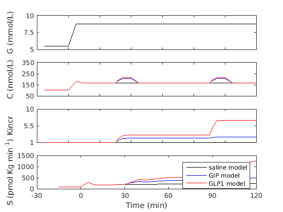 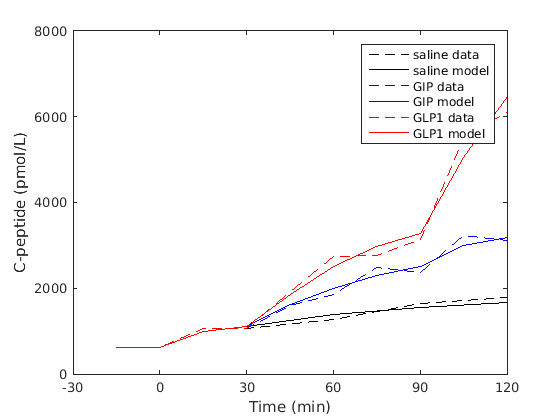
- Study B1: hiperglycemic clamp (HGC) with saline, GIP infusion or GLP1 infusion at different doses - T2D subjects
Data from Nauck et al., JCI 1993
clear all close all clc % load data load NauckJCI/NauckJCI_T2D % Simulate calcium - saline infusion pca=[p_peak;p(17:23)];% calcium parameter camod=casim(glu,pca); % Simulate calcium - GIP and GLP1 infusion camod_IE=struct('t',{},'v',{}); for k=1:2 camod_IE(k).t=camod.t; camod_IE(k).v=camod.v+ca_transient(k).v; end % Simulate secretion - saline infusion secmod=secsim_IE(p,camod,glu,Kglu);% Kglu is the potentiating ... % effect of glucose during HGC, independent from the incretin effect but that affects the .. % refilling as the incretin effect % Simulate secretion with the contribution of GIP or GLP1 infusion Kincr_glu=struct('t',{},'v',{}); for k=1:2 Kincr_glu(k).t=Kincr(k).t; Kincr_glu(k).v=Kincr(k).v.*Kglu.v; end % Kglu is the potentiating ... % effect of glucose during HGC, independent from the incretin effect but that affects the .. % refilling as the incretin effect secmod_IE=struct('t',{},'v',{}); for k=1:2 secmod_IE(k)=secsim_IE(p,camod_IE(k),glu,Kincr_glu(k)); end % Calculate cpeptide [pcp,~,~]=vancau('T2D','M',age,weight,height); % cpeptide - saline infusion cpepmod=cpepsim(pcp,cpep(1).t,secmod); % cpeptide - GIP infusion low dose (4 pmol/kg/min), GIP infusion % high dose (16 pmol/kg/min), GLP1 infusion (1 pmol/kg/min) cpepmod_IE=struct('t',{},'v',{}); for k=1:2 cpepmod_IE(k)=cpepsim(pcp,cpep(k+1).t,secmod_IE(k)); end % Plot glucose, calcium, Kincr, secretion subplot(4,1,1) plot(glu.t,glu.v,'k') setAxes(-20, 120, 8, '', 5, 10, 3, 'G (mmol/L)') % generate the figure with the proper layout subplot(4,1,2) plot(camod.t,camod.v,'k',camod_IE(1).t,camod_IE(1).v,'b',... camod_IE(2).t,camod_IE(2).v,'r') setAxes(-20, 120, 8, '', 50, 350, 4, 'C (nmol/L)') % generate the figure with the proper layout subplot(4,1,3) plot(glu.t,ones(1,numel(glu.t)),'k',Kincr(1).t,Kincr(1).v,'b',... Kincr(2).t,Kincr(2).v,'r') setAxes(-20, 120,8, '', 1, 10, 3, 'Kincr') % generate the figure with the proper layout subplot(4,1,4) plot(secmod.t,secmod.v/BSA,'k',secmod_IE(1).t,secmod_IE(1).v/BSA,'b',... secmod_IE(2).t,secmod_IE(2).v/BSA,'r') % model secretion needs to be normalized to body surface setAxes(-30, 120, 6, 'Time (min)', ... 0, 1500, 4, 'S (pmol Kg min^{-1})') % generate the figure with the proper layout legend('saline model','GIP model','GLP1 model') % Plot cpeptide figure() plot(cpep(1).t,cpep(1).v*1000,'--k',cpepmod.t,cpepmod.v,'k',... % *1000 to express in pmol/L cpep(2).t,cpep(2).v*1000,'--b',cpepmod_IE(1).t,cpepmod_IE(1).v,'b',... cpep(3).t,cpep(3).v*1000,'--r',cpepmod_IE(2).t,cpepmod_IE(2).v,'r'); setAxes(-30, 120, 6, 'Time (min)', ... 0, 8000, 5, 'C-peptide (pmol/L)') % generate the figure with the proper layout legend('saline data','saline model','GIP data','GIP model','GLP1 data','GLP1 model')
Warning: When delay time is set to zero, the transport delay block 'betavars/tau_k' is automatically set to support direct feedthrough. This may cause an algebraic loop. A Memory Block can be used in place of the Transport Delay to break the loop Warning: When delay time is set to zero, the transport delay block 'betavars/tau_k' is automatically set to support direct feedthrough. This may cause an algebraic loop. A Memory Block can be used in place of the Transport Delay to break the loop Warning: When delay time is set to zero, the transport delay block 'betavars/tau_k' is automatically set to support direct feedthrough. This may cause an algebraic loop. A Memory Block can be used in place of the Transport Delay to break the loop
- Study B2: hyperglicaemic clamp (HGC) with saline, GIP or GLP1 infusion - NGT subjects
Data from Hojberg et al., 2009
clear all close all clc % load data load Hojberg/Hojberg_NGT % Calculate calcium from glucose - saline infusion pca=[p_peak;p(17:23)]; % calcium parameter camod=casim(glu,pca); % calcium with saline infusiomn % Calculate calcium from glucose and GIP or GLP1 infusion camod_IE.t=camod.t; camod_IE.v=camod.v+ca_transient.v; % Simulate secretion with saline infusion secmod=secsim_IE(p,camod,glu,Kglu);% Kglu is the potentiating ... % effect of glucose during HGC, independent from the incretin effect but that affects the .. % refilling as the incretin effect % Simulate secretion with the contribution of the incretin effect Kincr_glu=struct('t',{},'v',{});% Kglu is the potentiating ... % effect of glucose during HGC, independent from the incretin effect but that affects the .. % refilling as the incretin effect for k=1:2 Kincr_glu(k).t=Kincr(k).t; Kincr_glu(k).v=Kincr(k).v.*Kglu.v; end secmod_IE=secsim_IE(p,camod_IE,glu,Kincr_glu(1),p,camod_IE,glu,Kincr_glu(2)); % Calculate cpeptide from secmod_IE [pcp,~,~]=vancau('ND','M',age,weight,height); cpepmod=cpepsim(pcp,glu.t,secmod); cpepmod_IE=struct('t',{},'v',{}); for k=1:2 cpepmod_IE(k)=cpepsim(pcp,glu.t,secmod_IE(k)); end % Plot glucose, calcium, Kincr, secretion subplot(4,1,1) plot(glu.t,glu.v,'k') setAxes(-15, 110, 9, '', 5, 20, 4, 'G (mmol/L)') % generate the figure with the proper layout subplot(4,1,2) plot(camod.t,camod.v,'k',camod_IE.t,camod_IE.v,'b') setAxes(-15, 110, 9, '', 50, 400, 3, 'C (nmol/L)') % generate the figure with the proper layout subplot(4,1,3) plot(glu.t,ones(1,numel(glu.t)),'k',Kincr(1).t,Kincr(1).v,'b',Kincr(2).t,Kincr(2).v,'b') setAxes(-15, 110, 9, '', 1, 2, 3, 'Kincr') % generate the figure with the proper layout subplot(4,1,4) plot(secmod.t,secmod.v/BSA,'k',secmod_IE(1).t,secmod_IE(1).v/BSA,'r',secmod_IE(2).t,secmod_IE(2).v/BSA,'b') % model secretion needs to be normalized to body surface setAxes(-15, 105, 9, 'Time (min)', ... 0, 1800, 7, 'S (pmol Kg min^{-1})') % generate the figure with the proper layout legend('saline','GIP','GLP-1') title('NGT') cpep_NGT(1)=cpep(1); cpep_NGT(2)=cpep(2); cpep_NGT(3)=cpep(3); cpepmod_NGT(1)=cpepmod; cpepmod_NGT(2)=cpepmod_IE(1); cpepmod_NGT(3)=cpepmod_IE(2);
Warning: When delay time is set to zero, the transport delay block 'betavars/tau_k' is automatically set to support direct feedthrough. This may cause an algebraic loop. A Memory Block can be used in place of the Transport Delay to break the loop Warning: When delay time is set to zero, the transport delay block 'betavars/tau_k' is automatically set to support direct feedthrough. This may cause an algebraic loop. A Memory Block can be used in place of the Transport Delay to break the loop Warning: When delay time is set to zero, the transport delay block 'betavars/tau_k' is automatically set to support direct feedthrough. This may cause an algebraic loop. A Memory Block can be used in place of the Transport Delay to break the loop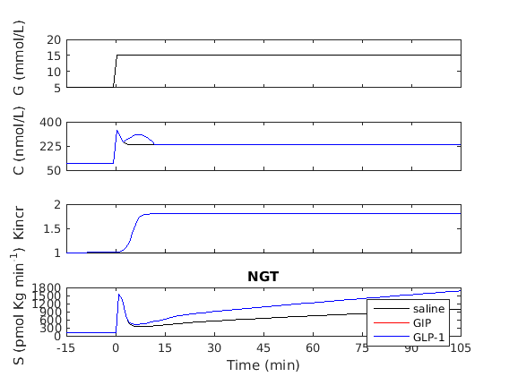
- Study B2: hyperglicaemic clamp (HGC) with saline, GIP or GLP1 infusion - T2D subjects (pre glucose normalization)
Data from Hojberg et al., 2009
%clear all close all clc % load data load Hojberg/Hojberg_T2D_pre % Calculate calcium from glucose - saline infusion pca=[p_peak;p(17:23,1)]; % calcium parameter camod=casim(glu,pca); % calcium with saline infusiomn % Calculate calcium from glucose and GIP or GLP1 infusion camod_IE.t=camod.t; camod_IE.v=camod.v+ca_transient.v; % Simulate secretion with saline infusion secmod=secsim_IE(p(:,1),camod,glu,Kglu);% Kglu is the potentiating ... % effect of glucose during HGC, independent from the incretin effect but that affects the .. % refilling as the incretin effect % Simulate secretion with the contribution of the incretin effect Kincr_glu=struct('t',{},'v',{});% Kglu is the potentiating ... % effect of glucose during HGC, independent from the incretin effect but that affects the .. % refilling as the incretin effect for k=1:2 Kincr_glu(k).t=Kincr(k).t; Kincr_glu(k).v=Kincr(k).v.*Kglu.v; end secmod_IE=secsim_IE(p(:,2),camod_IE,glu,Kincr_glu(1),p(:,3),camod_IE,glu,Kincr_glu(2)); % Calculate cpeptide from secmod_IE [pcp,~,~]=vancau('T2D','M',age,weight,height); cpepmod=cpepsim(pcp,glu.t,secmod); cpepmod_IE=struct('t',{},'v',{}); % calcium with the different GLP1 infusions (0.5,1 or 2 pmol/Kg/min) for k=1:2 cpepmod_IE(k)=cpepsim(pcp,glu.t,secmod_IE(k)); end % Plot glucose, calcium, Kincr, secretion subplot(4,1,1) plot(glu.t,glu.v,'k') setAxes(-15, 110, 9, '', 10, 20, 3, 'G (mmol/L)') % generate the figure with the proper layout subplot(4,1,2) plot(camod.t,camod.v,'k',camod_IE.t,camod_IE.v,'r') setAxes(-15, 110, 9, '', 50, 350, 4, 'C (nmol/L)') % generate the figure with the proper layout subplot(4,1,3) plot(glu.t,ones(1,numel(glu.t)),'k',Kincr(1).t,Kincr(1).v,'b',Kincr(2).t,Kincr(2).v,'r') setAxes(-15, 110, 9, '', 1, 2, 3, 'Kincr') % generate the figure with the proper layout subplot(4,1,4) plot(secmod.t,secmod.v/BSA,'k',secmod_IE(1).t,secmod_IE(1).v/BSA,'b',secmod_IE(2).t,secmod_IE(2).v/BSA,'r') % model secretion needs to be normalized to body surface setAxes(-15, 105, 9, 'Time (min)', ... 0, 300, 3, 'S (pmol Kg min^{-1})') % generate the figure with the proper layout legend('saline','GIP','GLP-1') title('T2D') cpep_T2Dpre(1)=cpep(1); cpep_T2Dpre(2)=cpep(2); cpep_T2Dpre(3)=cpep(3); cpepmod_T2Dpre(1)=cpepmod; cpepmod_T2Dpre(2)=cpepmod_IE(1); cpepmod_T2Dpre(3)=cpepmod_IE(2);
Warning: When delay time is set to zero, the transport delay block 'betavars/tau_k' is automatically set to support direct feedthrough. This may cause an algebraic loop. A Memory Block can be used in place of the Transport Delay to break the loop Warning: When delay time is set to zero, the transport delay block 'betavars/tau_k' is automatically set to support direct feedthrough. This may cause an algebraic loop. A Memory Block can be used in place of the Transport Delay to break the loop Warning: When delay time is set to zero, the transport delay block 'betavars/tau_k' is automatically set to support direct feedthrough. This may cause an algebraic loop. A Memory Block can be used in place of the Transport Delay to break the loop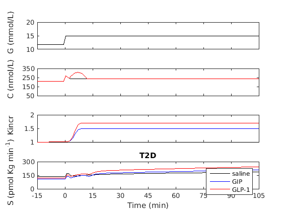
- Study B2: plot cpeptide
figure() set(gcf,'position', [250 250 800 400]) subplot(1,3,1) %Plot cpeptide - saline infusion in NGT and T2D pre glucose normalization plot(cpep_NGT(1).t,cpep_NGT(1).v,'--k',cpepmod_NGT(1).t,cpepmod_NGT(1).v,'k',... cpep_T2Dpre(1).t,cpep_T2Dpre(1).v,'--r',cpepmod_T2Dpre(1).t,cpepmod_T2Dpre(1).v,'r') setAxes(-15, 105, 9, 'Time(min)', 0, 12000, 7, 'C-peptide (pmol/L)') % generate the figure with the proper layout title('Saline') subplot(1,3,2) %Plot cpeptide - GIP infusion in NGT and T2D pre glucose normalization plot(cpep_NGT(2).t,cpep_NGT(2).v,'--k',cpepmod_NGT(2).t,cpepmod_NGT(2).v,'k',... cpep_T2Dpre(2).t,cpep_T2Dpre(2).v,'--r',cpepmod_T2Dpre(2).t,cpepmod_T2Dpre(2).v,'r') setAxes(-15, 105, 9, 'Time(min)', 0, 12000, 7, '') % generate the figure with the proper layout title('GIP') subplot(1,3,3) %Plot cpeptide - GLP1 infusion in NGT and T2D pre glucose normalization plot(cpep_NGT(3).t,cpep_NGT(3).v,'--k',cpepmod_NGT(3).t,cpepmod_NGT(3).v,'k',... cpep_T2Dpre(3).t,cpep_T2Dpre(3).v,'--r',cpepmod_T2Dpre(3).t,cpepmod_T2Dpre(3).v,'r') setAxes(-15, 105, 9, 'Time(min)', 0, 12000, 7, '') % generate the figure with the proper layout title('GLP1') legend('NGT data','NGT model','T2D data','T2D model')
- Study B3: hiperglycemic clamp (HGC) with saline or GIP infusion - NGT subjects
Data from Vilsboll et al., 2002
clear all close all clc % load data load Vilsboll/Vilsboll_NGT_prot2 % Simulate calcium - saline infusion pca=[p_peak;p(17:23)];% calcium parameter camod=casim(glu,pca); % Simulate calcium - GIP infusion low dose (4 pmol/kg/min) camod_IE.t=camod.t; camod_IE.v=camod.v+ca_transient.v; % Simulate secretion - saline infusion secmod=secsim_IE(p,camod,glu,Kglu);% Kglu is the potentiating ... % effect of glucose during HGC, independent from the incretin effect but that affects the .. % refilling as the incretin effect % Simulate secretion with the contribution of the incretin effect % GIP infusion low dose (4 pmol/kg/min) Kincr_glu.t=Kincr.t; Kincr_glu.v=Kincr.v.*Kglu.v; % Kglu is the potentiating ... % effect of glucose during HGC, independent from the incretin effect but that affects the .. % refilling as the incretin effect secmod_IE=secsim_IE(p,camod_IE,glu,Kincr_glu); % Calculate cpeptide [pcp,~,~]=vancau('ND','M',age,weight,height); % cpeptide - saline infusion cpepmod=cpepsim(pcp,glu.t,secmod); % cpeptide - GIP infusion low dose (4 pmol/kg/min) cpepmod_IE=cpepsim(pcp,glu.t,secmod_IE); % Plot glucose, calcium, Kincr, secretion figure() subplot(4,1,1) plot(glu.t,glu.v,'k') setAxes(-10, 140, 4, '', 5, 20, 4, 'G (mmol/L)') % generate the figure with the proper layout subplot(4,1,2) plot(camod.t,camod.v,'k',camod_IE.t,camod_IE.v,'b') setAxes(-10, 140, 4, '', 50, 550, 6, 'C (nmol/L)') % generate the figure with the proper layout subplot(4,1,3) plot(glu.t,ones(1,numel(glu.t)),'k',Kincr.t,Kincr.v,'b') setAxes(-10, 140, 4, '', 1, 3, 3, 'Kincr') % generate the figure with the proper layout subplot(4,1,4) plot(secmod.t,secmod.v/BSA,'k',secmod_IE.t,secmod_IE.v/BSA,'b') % model secretion needs to be normalized to body surface setAxes(-10, 140, 4, 'Time', ... 0, 2500, 6, 'S (pmol Kg min^{-1})') % generate the figure with the proper layout legend('saline model','GIP model'); title('NGT') %plot cpeptide figure() set(gcf,'position', [250 250 400 400]) pl=plot(cpep(1).t,cpep(1).v,'--k',cpepmod.t,cpepmod.v,'k',... cpep(2).t,cpep(2).v,'--b',cpepmod_IE.t,cpepmod_IE.v,'b'); xlabel('Time (min)','FontSize',16) ylabel('C-peptide (pmol/L)','FontSize',16) xlim([-10 120]) h=legend('saline data','saline model','GIP data','GIP model'); set(h,'Location','northwest') title('NGT')
Warning: When delay time is set to zero, the transport delay block 'betavars/tau_k' is automatically set to support direct feedthrough. This may cause an algebraic loop. A Memory Block can be used in place of the Transport Delay to break the loop Warning: When delay time is set to zero, the transport delay block 'betavars/tau_k' is automatically set to support direct feedthrough. This may cause an algebraic loop. A Memory Block can be used in place of the Transport Delay to break the loop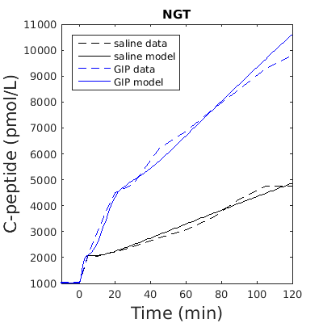
- Study B3: hiperglycemic clamp (HGC) with saline, GIP infusion at different doses or GLP1 infusion - T2D subjects
Data from Vilsboll et al., 2002
clear all close all clc % load data load Vilsboll/Vilsboll_T2D_prot2 % Simulate calcium - saline infusion pca=[p_peak;p(17:23)];% calcium parameter camod=casim(glu,pca); % Simulate calcium - GIP infusion low dose (4 pmol/kg/min), GIP infusion % high dose (16 pmol/kg/min), GLP1 infusion (1 pmol/kg/min) camod_IE=struct('t',{},'v',{}); for k=1:3 camod_IE(k).t=camod.t; camod_IE(k).v=camod.v+ca_transient(k).v; end % Simulate secretion - saline infusion secmod=secsim_IE(p,camod,glu,Kglu);% Kglu is the potentiating ... % effect of glucose during HGC, independent from the incretin effect but that affects the .. % refilling as the incretin effect % Simulate secretion with the contribution of the incretin effect % GIP infusion low dose (4 pmol/kg/min), GIP infusion % high dose (16 pmol/kg/min), GLP1 infusion (1 pmol/kg/min) Kincr_glu=struct('t',{},'v',{}); for k=1:3 Kincr_glu(k).t=Kincr(k).t; Kincr_glu(k).v=Kincr(k).v.*Kglu.v; end % Kglu is the potentiating ... % effect of glucose during HGC, independent from the incretin effect but that affects the .. % refilling as the incretin effect secmod_IE=struct('t',{},'v',{}); for k=1:3 secmod_IE(k)=secsim_IE(p,camod_IE(k),glu,Kincr_glu(k)); end % Calculate cpeptide [pcp,~,~]=vancau('T2D','M',age,weight,height); % cpeptide - saline infusion cpepmod=cpepsim(pcp,glu.t,secmod); % cpeptide - GIP infusion low dose (4 pmol/kg/min), GIP infusion % high dose (16 pmol/kg/min), GLP1 infusion (1 pmol/kg/min) cpepmod_IE=struct('t',{},'v',{}); for k=1:3 cpepmod_IE(k)=cpepsim(pcp,glu.t,secmod_IE(k)); end % Plot glucose, calcium, Kincr, secretion figure() subplot(4,1,1) plot(glu.t,glu.v,'k') setAxes(-10, 190, 11, '', 5, 20, 4, 'G (mmol/L)') % generate the figure with the proper layout subplot(4,1,2) plot(camod.t,camod.v,'k',camod_IE(1).t,camod_IE(1).v,'b',camod_IE(2).t,camod_IE(2).v,'g',camod_IE(3).t,camod_IE(3).v,'r') setAxes(-10, 190, 11, '', 0, 400, 5, 'C (nmol/L)') % generate the figure with the proper layout subplot(4,1,3) plot(glu.t,ones(1,numel(glu.t)),'k',Kincr(1).t,Kincr(1).v,'b',Kincr(2).t,Kincr(2).v,'g',Kincr(3).t,Kincr(3).v,'r') setAxes(-10, 190, 11, '', 1, 8, 8, 'Kincr') % generate the figure with the proper layout subplot(4,1,4) plot(secmod.t,secmod.v/BSA,'k',secmod_IE(1).t,secmod_IE(1).v/BSA,'b',secmod_IE(2).t,secmod_IE(2).v/BSA,'g',secmod_IE(3).t,secmod_IE(3).v/BSA,'r') % model secretion needs to be normalized to body surface setAxes(-10, 190, 11, 'Time (min)', ... 0, 2500, 6, 'S (pmol Kg min^{-1})') % generate the figure with the proper layout legend('saline model','GIP model','GIP high model','GLP1 model') title('T2D') % plot cpeptide figure() set(gcf,'position', [250 250 400 400]) pl=plot(cpep(1).t,cpep(1).v,'--k',cpepmod.t,cpepmod.v,'k',... cpep(2).t,cpep(2).v,'--b',cpepmod_IE(1).t,cpepmod_IE(1).v,'b',... cpep(3).t,cpep(3).v,'--g',cpepmod_IE(2).t,cpepmod_IE(2).v,'g',... cpep(4).t,cpep(4).v,'--r',cpepmod_IE(3).t,cpepmod_IE(3).v,'r'); xlabel('Time (min)','FontSize',16) ylabel('C-peptide (pmol/L)','FontSize',16) xlim([-10 190]) h=legend('saline data','saline model','GIP data','GIP model','GIP high data','GIP high model',... 'GLP1 data','GLP1 model'); set(h,'Location','northwest') title('T2D')
Warning: When delay time is set to zero, the transport delay block 'betavars/tau_k' is automatically set to support direct feedthrough. This may cause an algebraic loop. A Memory Block can be used in place of the Transport Delay to break the loop Warning: When delay time is set to zero, the transport delay block 'betavars/tau_k' is automatically set to support direct feedthrough. This may cause an algebraic loop. A Memory Block can be used in place of the Transport Delay to break the loop Warning: When delay time is set to zero, the transport delay block 'betavars/tau_k' is automatically set to support direct feedthrough. This may cause an algebraic loop. A Memory Block can be used in place of the Transport Delay to break the loop Warning: When delay time is set to zero, the transport delay block 'betavars/tau_k' is automatically set to support direct feedthrough. This may cause an algebraic loop. A Memory Block can be used in place of the Transport Delay to break the loop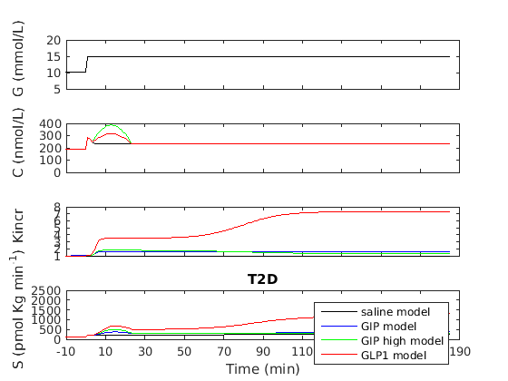 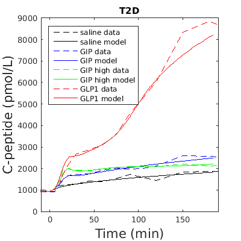
- Study B4: hyperglicaemic clamp (HGC) with boluses and infusion of GIP at different doses - NGT subjects
Data from Meier et al., 2004;
clear all close all clc % load data load Meier/Meier_NGT % Calculate calcium from glucose pca=[p_peak;p(17:23)]; % calcium parameter camod=casim(glu,pca); % Add to calcium the transient increse due to the incretin effect camod_IE.t=camod.t; camod_IE.v=camod.v+ca_transient.v; % Simulate secretion with the contribution of the incretin effect Kincr_glu.t=Kincr.t; Kincr_glu.v=Kincr.v.*Kglu.v; % Kglu is the potentiating ... % effect of glucose during HGC, independent from the incretin effect but that affects the .. % refilling as the incretin effect secmod_IE=secsim_IE(p,camod_IE,glu,Kincr_glu); % Calculate cpeptide from secmod_IE [pcp,~,~]=vancau('ND','M',age,weight,height); cpepmod_IE=cpepsim(pcp,glu.t,secmod_IE); % Plot glucose, calcium, Kincr, secretion, cpeptide subplot(5,1,1) plot(glu.t,glu.v,'k') setAxes(-60, 180, 9, '', 5, 15, 3, 'G (mmol/L)') % generate the figure with the proper layout subplot(5,1,2) plot(camod_IE.t,camod_IE.v,'b') setAxes(-60, 180, 9, '', 0, 500, 3, 'C (nmol/L)') % generate the figure with the proper layout subplot(5,1,3) plot(Kincr.t,Kincr.v,'b') setAxes(-60, 180, 9, '', 1, 4, 4, 'Kincr') % generate the figure with the proper layout subplot(5,1,4) plot(sec.t,sec.v/BSA,'k',secmod_IE.t,secmod_IE.v/BSA,'b') % sec has been calculated through deconvolution from cpeptide data,... % secretion needs to be normalized to body surface setAxes(-60, 180, 9, '', ... 0, 1300, 3, 'S (pmol min^{-1}m^{-2})') % generate the figure with the proper layout subplot(5,1,5) plot(cpep.t,cpep.v,'k',cpepmod_IE.t,cpepmod_IE.v,'b'); setAxes(-60, 180, 9, 'Time (min)', ... 0, 3500, 3, 'C-peptide (pmol/L)') % generate the figure with the proper layout legend('data','model')
Warning: When delay time is set to zero, the transport delay block 'betavars/tau_k' is automatically set to support direct feedthrough. This may cause an algebraic loop. A Memory Block can be used in place of the Transport Delay to break the loop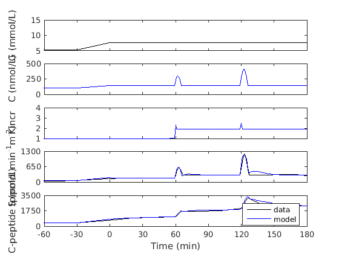
- Study B4: hyperglicaemic clamp (HGC) with boluses and infusion of GIP at different doses - T2D subjects
Data from Meier et al., 2004;
clear all close all clc % load data load Meier/Meier_T2D % Calculate calcium from glucose pca=[p_peak;p(17:23)]; % calcium parameter camod=casim(glu,pca); % Add to calcium the transient increse due to the incretin effect camod_IE.t=camod.t; camod_IE.v=camod.v+ca_transient.v; % Simulate secretion with the contribution of the incretin effect Kincr_glu.t=Kincr.t; Kincr_glu.v=Kincr.v.*Kglu.v; % Kglu is the potentiating ... % effect of glucose during HGC, independent from the incretin effect but that affects the .. % refilling as the incretin effect secmod_IE=secsim_IE(p,camod_IE,glu,Kincr_glu); % Calculate cpeptide from secmod_IE [pcp,~,~]=vancau('ND','M',age,weight,height); cpepmod_IE=cpepsim(pcp,glu.t,secmod_IE); % Plot glucose, calcium, Kincr, secretion, cpeptide subplot(5,1,1) plot(glu.t,glu.v,'k') setAxes(-60, 180, 9, '', 5, 15, 3, 'G (mmol/L)') % generate the figure with the proper layout subplot(5,1,2) plot(camod_IE.t,camod_IE.v,'k') setAxes(-60, 180, 9, '', 0, 500, 3, 'C (nmol/L)') % generate the figure with the proper layout subplot(5,1,3) plot(Kincr.t,Kincr.v,'k') setAxes(-60, 180, 9, '', 1, 3, 3, 'Kincr') % generate the figure with the proper layout subplot(5,1,4) plot(sec.t,sec.v/BSA,'k',secmod_IE.t,secmod_IE.v/BSA,'b') % sec has been calculated through deconvolution from cpeptide data,... % secretion needs to be normalized to body surface setAxes(-60, 180, 9, '', ... 0, 500, 3, 'S (pmol min^{-1}m^{-2})') % generate the figure with the proper layout subplot(5,1,5) plot(cpep.t,cpep.v,'k',cpepmod_IE.t,cpepmod_IE.v,'b'); setAxes(-60, 180, 9, 'Time (min)', ... 0, 1500, 3, 'C-peptide (pmol/L)') % generate the figure with the proper layout legend('data','model')
Warning: When delay time is set to zero, the transport delay block 'betavars/tau_k' is automatically set to support direct feedthrough. This may cause an algebraic loop. A Memory Block can be used in place of the Transport Delay to break the loop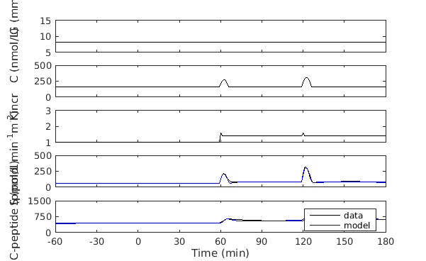
- Study C1: glucose ramp with saline infusion or GLP1 infusion at different doses - NGT subjects
Data from Kjems et al., 2003
clear all close all clc % load data load Kjems/Kjems_NGT % Calculate calcium from glucose - saline infusion pca=[p_peak;p(17:23)]; % calcium parameter camod=casim(glu,pca); % calcium with saline infusiomn % Calculate calcium from glucose and GLP1 infusion camod_IE=struct('t',{},'v',{}); % calcium with the different GLP1 infusions (0.5,1 or 2 pmol/Kg/min) for k=1:3 camod_IE(k).t=camod.t; camod_IE(k).v=camod.v+ca_transient(k).v; end % Simulate secretion with saline infusion secmod=secsim(p,camod,glu); % Simulate secretion with the different GLP1 infusions (0.5,1 or 2 pmol/Kg/min) secmod_IE=secsim_IE(p,camod_IE(1),glu,Kincr(1),p,camod_IE(2),glu,Kincr(2),p,camod_IE(3),glu,Kincr(3)); % Calculate glucose sensitivity as reported in Fig. 6 of Kjems et al., 2003 gsmod.t=[0 0.5 1 2]; % GLP1 infusion doses lin_reg=lreg(glu.v,secmod.v/BW); gsmod.v(1)=lin_reg(1); for k=1:3 lin_reg=lreg(glu.v,secmod_IE(k).v/BW); gsmod.v(k+1)=lin_reg(1); end % Plot glucose, calcium, Kincr, secretion subplot(4,1,1) plot(glu.t,glu.v,'k') setAxes(-5, 180, 7, '', 4, 12, 3, 'G (mmol/L)') % generate the figure with the proper layout subplot(4,1,2) plot(camod.t,camod.v,camod_IE(1).t,camod_IE(1).v,camod_IE(2).t,camod_IE(2).v,... camod_IE(3).t,camod_IE(3).v) setAxes(-5, 180, 7, '', 50, 250, 3, 'C (nmol/L)') % generate the figure with the proper layout subplot(4,1,3) plot(glu.t,ones(1,numel(glu.t)),Kincr(1).t,Kincr(1).v,Kincr(2).t,Kincr(2).v,... Kincr(3).t,Kincr(3).v) setAxes(-5, 180, 7, '', 1, 12, 3, 'Kincr') % generate the figure with the proper layout subplot(4,1,4) plot(secmod.t,secmod.v/BW,secmod_IE(1).t,secmod_IE(1).v/BW,secmod_IE(2).t,secmod_IE(2).v/BW,... secmod_IE(3).t,secmod_IE(3).v/BW) % model secretion needs to be normalized to body weight setAxes(-5, 180, 7, 'Time (min)', ... 0, 40, 3, 'S (pmol Kg min^{-1})') % generate the figure with the proper layout % Figure 6 of Kjems et al., 2003 - NGT figure() set(gcf,'position', [250 250 400 400]) pl=plot(gsmod.t,gs,gsmod.t,gsmod.v,'--o'); xlabel('GLP1 (pmol kg^{-1} min^{-1})','FontSize',18) ylabel('S vs G (pmol kg^{-1} min^{-1} / mmol L^{-1})','FontSize',18) h=legend('NGT data','NGT model'); set(pl,'linewidth',2) set(h,'Location','northwest')
Warning: When delay time is set to zero, the transport delay block 'betavars/tau_k' is automatically set to support direct feedthrough. This may cause an algebraic loop. A Memory Block can be used in place of the Transport Delay to break the loop Warning: When delay time is set to zero, the transport delay block 'betavars/tau_k' is automatically set to support direct feedthrough. This may cause an algebraic loop. A Memory Block can be used in place of the Transport Delay to break the loop Warning: When delay time is set to zero, the transport delay block 'betavars/tau_k' is automatically set to support direct feedthrough. This may cause an algebraic loop. A Memory Block can be used in place of the Transport Delay to break the loop Warning: When delay time is set to zero, the transport delay block 'betavars/tau_k' is automatically set to support direct feedthrough. This may cause an algebraic loop. A Memory Block can be used in place of the Transport Delay to break the loop
- Study C1: glucose ramp with saline infusion or GLP1 infusion at different doses - T2D subjects
Data from Kjems et al., 2003
clear all close all clc % load data load Kjems/Kjems_T2D % Calculate calcium from glucose - saline infusion pca=[p_peak;p(17:23)]; % calcium parameter camod=casim(glu,pca); % calcium with saline infusiomn % Calculate calcium from glucose and GLP1 infusion camod_IE=struct('t',{},'v',{}); % calcium with the different GLP1 infusions (0.5,1 or 2 pmol/Kg/min) for k=1:3 camod_IE(k).t=camod.t; camod_IE(k).v=camod.v+ca_transient(k).v; end % Simulate secretion with saline infusion secmod=secsim(p,camod,glu); % Simulate secretion with the different GLP1 infusions (0.5,1 or 2 pmol/Kg/min) secmod_IE=secsim_IE(p,camod_IE(1),glu,Kincr(1),p,camod_IE(2),glu,Kincr(2),p,camod_IE(3),glu,Kincr(3)); % Calculate glucose sensitivity as reported in Fig. 6 of Kjems et al., 2003 gsmod.t=[0 0.5 1 2]; % GLP1 infusion doses lin_reg=lreg(glu.v,secmod.v/BW); gsmod.v(1)=lin_reg(1); for k=1:3 lin_reg=lreg(glu.v,secmod_IE(k).v/BW); gsmod.v(k+1)=lin_reg(1); end % Plot glucose, calcium, Kincr, secretion subplot(4,1,1) plot(glu.t,glu.v,'k') setAxes(-5, 180, 7, '', 5, 15, 3, 'G (mmol/L)') % generate the figure with the proper layout subplot(4,1,2) plot(camod.t,camod.v,camod_IE(1).t,camod_IE(1).v,camod_IE(2).t,camod_IE(2).v,... camod_IE(3).t,camod_IE(3).v) setAxes(-5, 180, 7, '', 50, 250, 3, 'C (nmol/L)') % generate the figure with the proper layout subplot(4,1,3) plot(glu.t,ones(1,numel(glu.t)),Kincr(1).t,Kincr(1).v,Kincr(2).t,Kincr(2).v,... Kincr(3).t,Kincr(3).v) setAxes(-5, 180, 7, '', 1, 8, 3, 'Kincr') % generate the figure with the proper layout subplot(4,1,4) plot(secmod.t,secmod.v/BW,secmod_IE(1).t,secmod_IE(1).v/BW,secmod_IE(2).t,secmod_IE(2).v/BW,... secmod_IE(3).t,secmod_IE(3).v/BW) % model secretion needs to be normalized to body weight setAxes(-5, 180, 7, 'Time (min)', ... 0, 40, 3, 'S (pmol Kg min^{-1})') % generate the figure with the proper layout % Figure 6 of Kjems et al., 2003 - T2D figure() set(gcf,'position', [250 250 400 400]) pl=plot(gsmod.t,gs,gsmod.t,gsmod.v,'--o'); xlabel('GLP1 (pmol kg^{-1} min^{-1})','FontSize',18) ylabel('S vs G (pmol kg^{-1} min^{-1} / mmol L^{-1})','FontSize',18) h=legend('T2D data','T2D model'); set(pl,'linewidth',2) set(h,'Location','northwest')
Warning: When delay time is set to zero, the transport delay block 'betavars/tau_k' is automatically set to support direct feedthrough. This may cause an algebraic loop. A Memory Block can be used in place of the Transport Delay to break the loop Warning: When delay time is set to zero, the transport delay block 'betavars/tau_k' is automatically set to support direct feedthrough. This may cause an algebraic loop. A Memory Block can be used in place of the Transport Delay to break the loop Warning: When delay time is set to zero, the transport delay block 'betavars/tau_k' is automatically set to support direct feedthrough. This may cause an algebraic loop. A Memory Block can be used in place of the Transport Delay to break the loop Warning: When delay time is set to zero, the transport delay block 'betavars/tau_k' is automatically set to support direct feedthrough. This may cause an algebraic loop. A Memory Block can be used in place of the Transport Delay to break the loop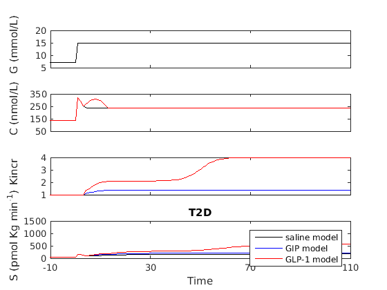 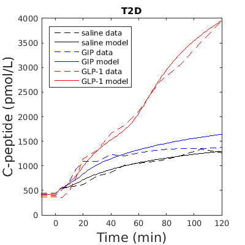
- Study D1: OGTT and Intravenous glucose infusion simulating an OGTT with saline, GIP or GLP1 infusion - NGT subjects
Data from Nauck et al., JCEM 1993
clear all close all clc % load data load NauckJCEM/NauckJCEM % Simulate calcium - OGTT IV pca=[p_peak;p(17:23)];% calcium parameter camod=casim(glu(1),pca); % Simulate calcium - OGTT,OGTT IV + GIP infusion, GLP1 infusion, GIP and GLP1 infusion camod_IE=struct('t',{},'v',{}); catmp=struct('t',{},'v',{}); for k=1:4 catmp(k)=casim(glu(k+1),pca); camod_IE(k).t=catmp(k).t; camod_IE(k).v=catmp(k).v+ca_transient(k).v; end % Simulate secretion - OGTT IV secmod=secsim(p,camod,glu(1)); % Simulate secretion - OGTT, OGTT IV + GIP infusion, GLP1 infusion, GIP and GLP1 infusion secmod_IE=struct('t',{},'v',{}); for k=1:4 secmod_IE(k)=secsim_IE(p,camod_IE(k),glu(k+1),Kincr(k)); end % Calculate cpeptide [pcp,~,~]=vancau('ND','M',age,weight,height); % cpeptide - OGTT IV cpepmod=cpepsim(pcp,glu(1).t,secmod); % cpeptide - OGTT and OGTT IV + GIP infusion, GLP1 infusion, GIPA and GLP1 infusion cpepmod_IE=struct('t',{},'v',{}); for k=1:4 cpepmod_IE(k)=cpepsim(pcp,glu(k+1).t,secmod_IE(k)); end
Warning: When delay time is set to zero, the transport delay block 'betavars/tau_k' is automatically set to support direct feedthrough. This may cause an algebraic loop. A Memory Block can be used in place of the Transport Delay to break the loop Warning: When delay time is set to zero, the transport delay block 'betavars/tau_k' is automatically set to support direct feedthrough. This may cause an algebraic loop. A Memory Block can be used in place of the Transport Delay to break the loop Warning: When delay time is set to zero, the transport delay block 'betavars/tau_k' is automatically set to support direct feedthrough. This may cause an algebraic loop. A Memory Block can be used in place of the Transport Delay to break the loop Warning: When delay time is set to zero, the transport delay block 'betavars/tau_k' is automatically set to support direct feedthrough. This may cause an algebraic loop. A Memory Block can be used in place of the Transport Delay to break the loop Warning: When delay time is set to zero, the transport delay block 'betavars/tau_k' is automatically set to support direct feedthrough. This may cause an algebraic loop. A Memory Block can be used in place of the Transport Delay to break the loop
Plot glucose, calcium, Kincr, secretion - OGTT-like
subplot(4,1,1) plot(glu(1).t,glu(1).v,'k') setAxes(-30, 220, 6, '', 5, 15, 3, 'G (mmol/L)') % generate the figure with the proper layout title('OGTT like') subplot(4,1,2) plot(camod.t,camod.v,'k') setAxes(-30, 220, 6, '', 50, 250, 5, 'C (nmol/L)') % generate the figure with the proper layout subplot(4,1,3) plot(glu(1).t,ones(1,numel(glu(1).t)),'k') setAxes(-30, 220, 6, '', 0.5, 1.5, 3, 'Kincr') % generate the figure with the proper layout subplot(4,1,4) plot(secmod.t,secmod.v/BSA,'k') % model secretion needs to be normalized to body surface setAxes(-30, 220, 6, 'Time (min)', ... 0, 500, 3, 'S (pmol Kg min^{-1})') % generate the figure with the proper layout titles={'OGTT' 'GIP infusion' 'GLP-1 infusion' 'GIP and GLP-1 infusion'};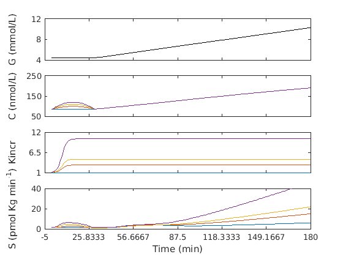
figure() for k=1:4 subplot(4,1,1) plot(glu(k+1).t,glu(k+1).v,'k') setAxes(-30, 220, 6, '', 5, 15, 3, 'G (mmol/L)') % generate the figure with the proper layout title(sprintf(titles{k})) subplot(4,1,2) plot(camod_IE(k).t,camod_IE(k).v,'k') setAxes(-30, 220, 6, '', 50, 250, 5, 'C (nmol/L)') % generate the figure with the proper layout subplot(4,1,3) plot(Kincr(k).t,Kincr(k).v,'k') setAxes(-30, 220, 6, '', 1, 5, 5, 'Kincr') % generate the figure with the proper layout subplot(4,1,4) plot(secmod_IE(k).t,secmod_IE(k).v/BSA,'k') % model secretion needs to be normalized to body surface setAxes(-30, 220, 6, 'Time (min)', ... 0, 800, 5, 'S (pmol Kg min^{-1})') % generate the figure with the proper layout end % Plot cpeptide figure() plot(cpep(1).t,cpep(1).v,'--k',cpepmod.t,cpepmod.v,'k',... cpep(2).t,cpep(2).v,'--g',cpepmod_IE(1).t,cpepmod_IE(1).v,'-g'); setAxes(-30, 220, 6, 'Time (min)', ... 0, 4000, 5, 'C-peptide (pmol/L)') % generate the figure with the proper layout legend('OGTT IV data','OGTT IV model','OGTT data','OGTT model') figure() plot(cpep(3).t,cpep(3).v,'--b',cpepmod_IE(2).t,cpepmod_IE(2).v,'b',... cpep(4).t,cpep(4).v,'--r',cpepmod_IE(3).t,cpepmod_IE(3).v,'-r',... cpep(5).t,cpep(5).v,'--m',cpepmod_IE(4).t,cpepmod_IE(4).v,'-m'); setAxes(-30, 220, 6, 'Time (min)', ... 0, 4000, 5, 'C-peptide (pmol/L)') % generate the figure with the proper layout legend('GIP data','GIP model','GLP1 data','GLP1 model','GIP and GLP1 data','GIP and GLP1 model')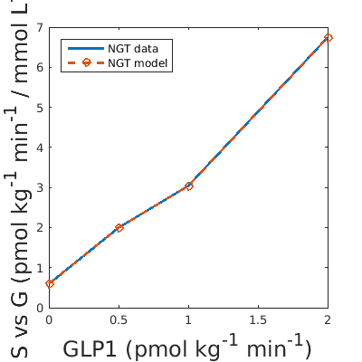 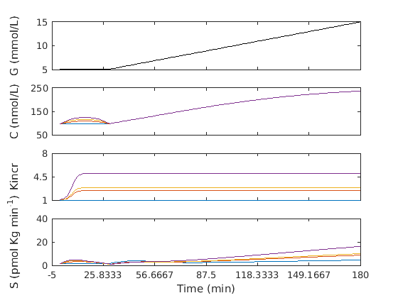 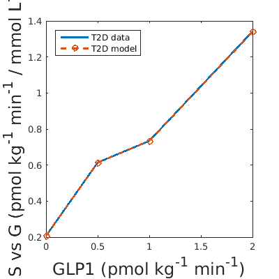
Data analysis
For each test we created a vector containing 6 elements: - element 1 of the vector: GIP or GLP1 infusion rate (pmol/kg/min) - element 2 of the vector GIP or GLP1 basal concentration (pmol/L) - total GIP or GLP1 - element 3 of the vector: AUC Kincr - element 4 of the vector: AUC calcium transient due to the incretin effect (nmol/L) - element 5 of the vector: AUC glu during the incretins stimulus (mmol/L) - element 6 of the vecotr: AUC of GIP or GLP1 concentration (pmol/L) - total GIP or GLP1 The vectors are saved in the file analysis_all_tests
% Element 2 and element 6 of the vectors referring to Nauck JCI and Nauck % JCEM studies are already rescaled as described in the methods part of the % article of Grespan et al. 2019 clear all close all clc load analysis_all_tests % plot GIP and GLP1 concentration vs Kincr calculated by the model for all % the diffferent tests load Kincrmod figure() subplot(1,2,1) p1=plot(test_GIP_NGT_Meier(:,6),test_GIP_NGT_Meier(:,3),'ob',... test_GIP_NGT_Honka(:,6),test_GIP_NGT_Honka(:,3),'sb',... test_GIP_NGT_Hojberg(:,6),test_GIP_NGT_Hojberg(:,3),'^b',... test_GIP_NGT_Vilsboll(:,6),test_GIP_NGT_Vilsboll(:,3),'*b',... test_GIP_NGT_NauckJCI(:,6),test_GIP_NGT_NauckJCI(:,3),'xb',... test_GIP_NGT_NauckJCEM(:,6),test_GIP_NGT_NauckJCEM(:,3),'+b',... test_GIP_GIPANDGLP1_NGT_NauckJCEM(:,6),test_GIP_GIPANDGLP1_NGT_NauckJCEM(:,3),'+b',... Kincrmod_GIP_NGT(1).t,Kincrmod_GIP_NGT(1).v,'-b',... test_GLP1_NGT_Honka(:,6),test_GLP1_NGT_Honka(:,3),'sr',... test_GLP1_NGT_Kjems(:,6),test_GLP1_NGT_Kjems(:,3),'dr',... test_GLP1_NGT_Hojberg(:,6),test_GLP1_NGT_Hojberg(:,3),'^r',... test_GLP1_NGT_NauckJCI(:,6),test_GLP1_NGT_NauckJCI(:,3),'xr',... test_GLP1_NGT_NauckJCEM(:,6),test_GLP1_NGT_NauckJCEM(:,3),'+r',... test_GLP1_GIPANDGLP1_NGT_NauckJCEM(:,6),test_GLP1_GIPANDGLP1_NGT_NauckJCEM(:,3),'+r',... Kincrmod_GLP1_NGT(1).t,Kincrmod_GLP1_NGT(1).v,'-r'); xlim([0 500]) ylim([1 10]) xlabel('Total hormone concentration (pmol/L)') ylabel('Incretin potentiation of ISR (k_{incr})') set(p1,'linewidth',2) set(gca,'FontSize',14) title('NGT') subplot(1,2,2) p1=plot(test_GIP_T2D_Mentis(:,6),test_GIP_T2D_Mentis(:,3),'vb',... test_GIP_T2D_Meier(:,6),test_GIP_T2D_Meier(:,3),'ob',... test_GIP_T2Dpre_Hojberg(:,6),test_GIP_T2Dpre_Hojberg(:,3),'^b',... test_GIP_T2D_Vilsboll(:,6),test_GIP_T2D_Vilsboll(:,3),'*b',... test_GIP_T2D_NauckJCI(:,6),test_GIP_T2D_NauckJCI(:,3),'xb',... Kincrmod_GIP_T2D.t,Kincrmod_GIP_T2D.v,'-b',... test_GLP1_T2D_Mentis(:,6),test_GLP1_T2D_Mentis(:,3),'vr',... test_GLP1_T2D_Kjems(:,6),test_GLP1_T2D_Kjems(:,3),'dr',... test_GLP1_T2Dpre_Hojberg(:,6),test_GLP1_T2Dpre_Hojberg(:,3),'^r',... test_GLP1_T2D_Vilsboll(:,6),test_GLP1_T2D_Vilsboll(:,3),'*r',... test_GLP1_T2D_NauckJCI(:,6),test_GLP1_T2D_NauckJCI(:,3),'xr',... Kincrmod_GLP1_T2D.t,Kincrmod_GLP1_T2D.v,'-r'); xlim([0 500]) ylim([1 10]) %set(gca,'xTick',[0 1 2 3 4 8 12 16]) xlabel('Total hormone concentration (pmol/L)') ylabel('Incretin potentiation of ISR (k_{incr})') set(p1,'linewidth',2) set(gca,'FontSize',14) title('T2D') % plot hormone-Kincr relationship used to simulate Study D1 figure() p1=plot(Kincrmod_GIP_NGT(2).t,Kincrmod_GIP_NGT(2).v,'-b',... Kincrmod_GLP1_NGT(2).t,Kincrmod_GLP1_NGT(2).v,'-r'); xlim([0 400]) ylim([1 10]) xlabel('Total hormone concentration (pmol/L)') ylabel('Incretin potentiation of ISR (k_{incr})') set(p1,'linewidth',2) set(gca,'FontSize',14) title('NGT')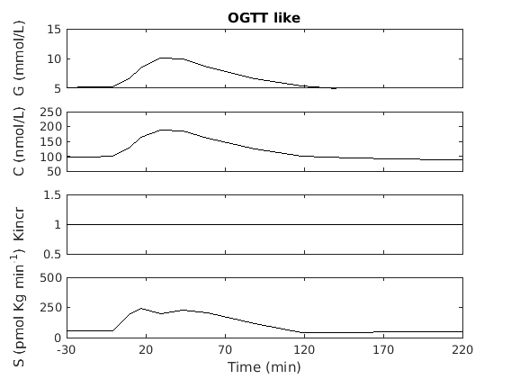 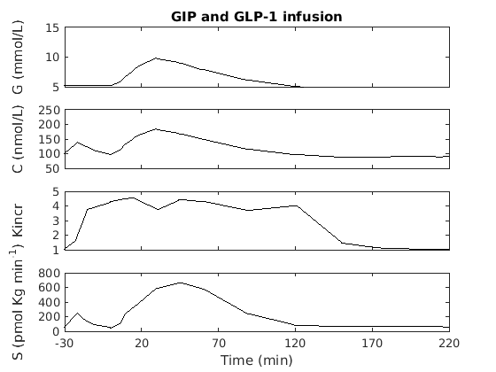